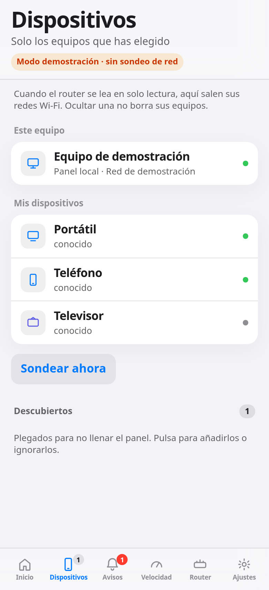

Demostración

Qué es
La documentación lo describe como un panel, en español y sin cuenta, para ver los equipos de la subred de casa, avisar cuando aparece un dispositivo nuevo y registrar la velocidad y las caídas de Internet. Lo presenta sin telemetría propia.
Hay dos piezas descritas: una para Windows, un ejecutable sin instalador ni permisos de administrador, y otra para Linux en amd64. El programa está escrito en Go 1.22 o posterior y lleva la interfaz web en el mismo ejecutable. En el iPhone, la documentación describe añadirlo a la pantalla de inicio desde Safari. El claro y el oscuro siguen el ajuste del sistema.
En el catálogo queda en Terminado / mantener. La documentación no lo da por instalado en casa.
La prueba de velocidad consulta un servicio público. Los avisos por webhook son opcionales y vienen desactivados. El resto del panel, según la documentación, no depende de una cuenta ni de un servicio en la nube.
Capacidades documentadas
-
Inventario
Equipos de su propia subred. Una lista de «Mis dispositivos» y una bandeja de «Descubiertos», con dos acciones: añadir o ignorar siempre.
-
Avisos
Aviso de dispositivo nuevo a partir de un primer sondeo de referencia. Esos avisos se pueden apagar.
-
Móviles
Reconoce las direcciones MAC aleatorias de los móviles y las muestra como «MAC privada».
-
Fabricantes
Identifica fabricantes con la lista pública del IEEE, incluida en el programa para consultarla sin conexión.
-
Caídas
Vigila la latencia y anota las caídas de Internet, con inicio, fin y duración. Que falle solo el router no cuenta como caída.
-
Velocidad
Prueba contra un servicio público, a mano o de forma periódica, con gráficas de 24 horas, 7 días y 30 días. También mide la velocidad entre el teléfono y el ordenador, dentro de casa.
-
Router
Lectura opcional, solo de consulta, de un router doméstico compatible. Los cambios en el router nacen desactivados.
-
Avisos externos
Avisos opcionales por un webhook compatible con ntfy, desactivados por defecto.
Acceso, según la documentación
La documentación indica que solo atiende peticiones de la red local, que no abre puertos en el router porque no usa UPnP, que no se actualiza solo y que no ejecuta órdenes llegadas por la red. El acceso va con un token.
Funciona por HTTP. La documentación lo sitúa dentro de casa y avisa de que no está pensado para exponerlo a Internet. El HTTPS queda para un certificado propio. Las notificaciones push en iOS necesitan ese HTTPS.
También describe un modo de demostración que no sondea la red ni mide, y que puede mostrar una vista de ejemplo.
Límites documentados
No ve los dispositivos que estén en otra red Wi-Fi aislada, por ejemplo una de domótica. No sondea una subred más amplia que una /24.
Esta página no añade resultados de pruebas. Lo anterior es lo que dice la documentación del proyecto.